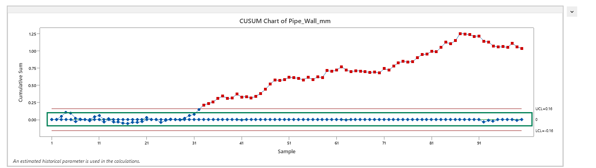
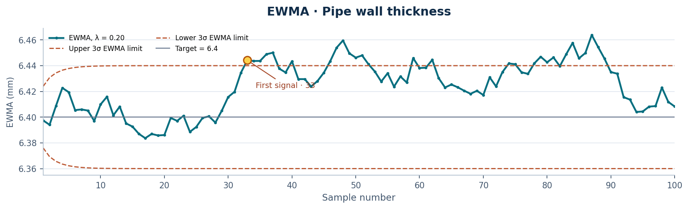
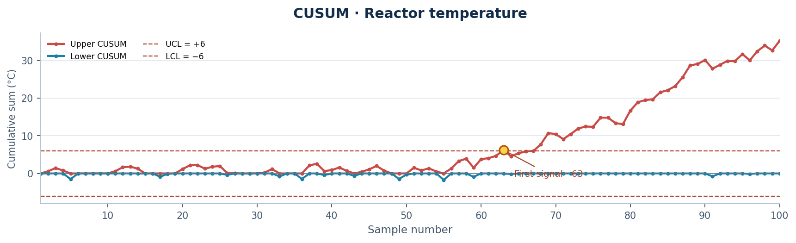
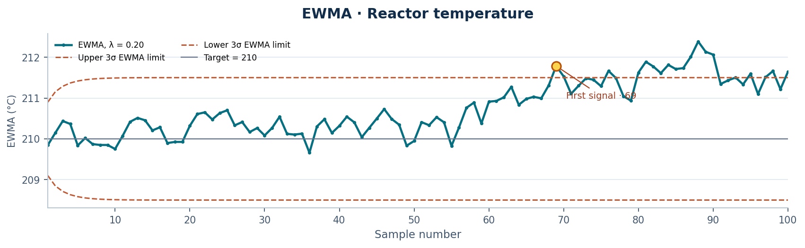
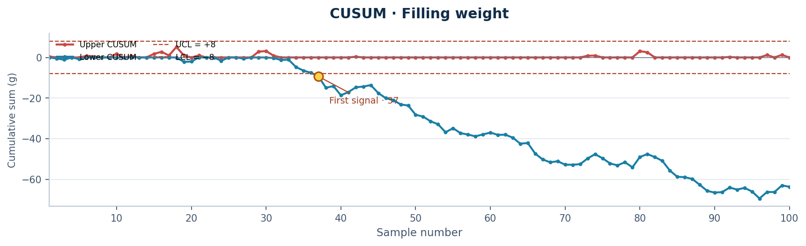
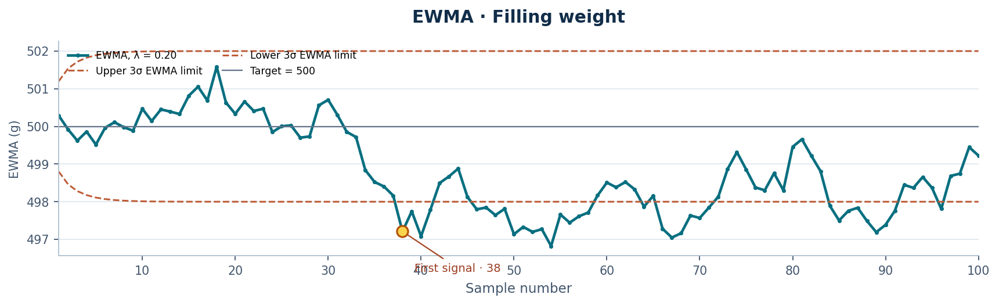
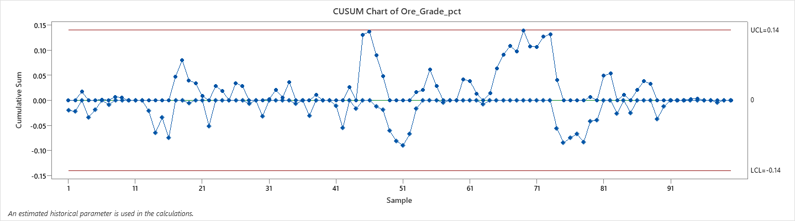
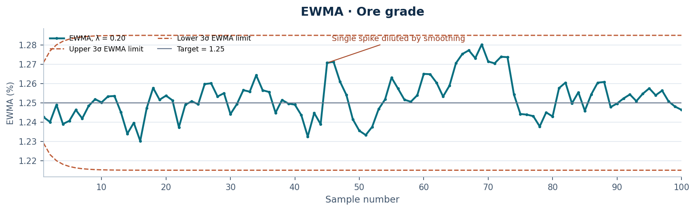

What you will be able to do
Understand and calculate
- Explain how CUSUM and EWMA remember earlier observations.
- Calculate upper/lower CUSUM and EWMA statistics by hand.
- Describe how K, H, λ and L affect detection.
Interpret and apply
- Read Minitab output and identify its first signal.
- Distinguish a sustained shift from an isolated unusual reading.
- Select a chart and document a practical response to a signal.
Prerequisites: Know what a process mean, standard deviation, and control limit are. Basic Minitab navigation helps, but each step is explained. Data and screenshots are from a synthetic teaching project, not production records.
Two process detectives, two different notebooks
Imagine a temperature sensor repeatedly reports 0.3°C above its normal average. Each individual reading is harmless-looking. A traditional Individuals chart inspects each point. A time-weighted chart asks: “Is this becoming a pattern?”
CUSUM: the running evidence counter
Every new reading adds or subtracts from a running score. A string of readings on the same side of target makes one score grow. When the evidence passes a decision limit, you investigate.
Think: a detective keeping two separate tallies: “above target” and “below target.”
EWMA: the intelligent smoothing filter
The latest reading gets some weight; the previous smoothed result gets the rest. Random zigzags look quieter, while a lasting change gradually pulls the smoothed line away from target.
Think: a temperature display that remembers its history but favors recent readings.
Which chart answers which question?
| Question | CUSUM | EWMA |
|---|---|---|
| How does it remember? | Accumulates qualifying deviations; each one-sided tally is floored at zero. | Uses exponentially declining weights on older measurements. |
| What is plotted? | Two separate statistics: upward and downward evidence. | One weighted process average. |
| What tunes sensitivity? | Reference allowance K and decision interval H. | Weight λ and control-limit multiplier L. |
| One isolated spike? | May not signal if its accumulated score does not reach H. | Can be diluted by smoothing, depending on λ. |
| Typical use | Small persistent bias in product thickness or fill weight. | Subtle drift in temperatures, measurements or processes. |
| Is one always faster? | No. Detection performance depends on the shift, variation, false-alarm design and tuning. Compare under the same conditions. | |
Essential vocabulary
| Term | Plain meaning | How to use it |
|---|---|---|
| Target, μ₀ | The in-control reference average | Established from validated process history or engineering target. |
| Historical σ | Normal short-term process spread | Use trustworthy, stable historical data; not the suspected shifted period. |
| K / k | CUSUM allowance: ignore tiny random wiggles | K is in measurement units; k = K/σ for individuals. |
| H / h | CUSUM alarm threshold | H in measurement units; h = H/σ for individuals. |
| λ (lambda) | How much the newest point matters | Smaller means more smoothing; larger means more immediate reaction. |
| ARL | Average run length, expected number of samples until a signal | Distinguish in-control false-alarm ARL from out-of-control detection ARL. |
The formulas are simply a way of remembering
CUSUM: an upward notebook and a downward notebook
EWMA: a moving average with a memory
EWMA control limits
Time-varying upper and lower limits for individual observations
Use + for UCL and − for LCL. For long-run limits, the bracketed term approaches 1. L = 3 is a common starting multiplier. For equal-sized subgroups, replace σ by σ/√n.One small thickness shift. Two very different stories.
Your pipe wall thickness target is 6.40 mm and historically σ = 0.04 mm. Six consecutive pipes measure 6.45 mm. None is wildly different on its own. Does the sequence matter?
Part A — CUSUM tallies the evidence
Set K = 0.5 × 0.04 = 0.02 mm and H = 4 × 0.04 = 0.16 mm. Every 6.45 mm reading adds 6.45 − 6.40 − 0.02 = 0.03 mm to the upper tally.
| Sample | Reading | Upper CUSUM | Lower CUSUM plotted | Result |
|---|---|---|---|---|
| 1 | 6.45 | 0.03 | 0 | Below H |
| 2 | 6.45 | 0.06 | 0 | Below H |
| 3 | 6.45 | 0.09 | 0 | Below H |
| 4 | 6.45 | 0.12 | 0 | Below H |
| 5 | 6.45 | 0.15 | 0 | Below H |
| 6 | 6.45 | 0.18 | 0 | Signal: 0.18 > 0.16 |
Part B — EWMA smoothly follows the shift
Start at Z₀ = 6.40 mm. With λ = 0.20, each new point contributes 20% of its value:
| Sample | EWMA Zᵢ (mm) | Time-varying UCL (mm) | Signal? |
|---|---|---|---|
| 1 | 6.4100 | 6.4240 | No |
| 2 | 6.4180 | 6.4307 | No |
| 3 | 6.4244 | 6.4344 | No |
| 4 | 6.4295 | 6.4365 | No |
| 5 | 6.4336 | 6.4378 | No |
| 6 | 6.4369 | 6.4386 | No |
| 7 | 6.4395 | 6.4391 | Yes |
Takeaway: with this particular repeated-reading example and these settings, CUSUM signals at sample 6, EWMA at sample 7. That is not a general claim that CUSUM is always faster.
A question that trips up even experienced analysts
Because the allowance K is still subtracted on every new reading. When xᵢ = μ₀, the upper tally becomes max(0, previous C⁺ − K). With K = 0.02 mm, a CUSUM of 0.18 goes to 0.16, then 0.14, and so on. EWMA also declines toward 6.40, but by exponential smoothing. Neither statistic automatically resets just because it crossed its control limit.
Change the process. Watch both detectives react.
You control the readings and chart settings. The graphs, signal positions and calculation table update locally in your browser. Try changing only λ or H, then ask how your detection timing changes.
Build your own monitoring experiment
CUSUM evidence
EWMA smoothed average
Show the first 12 calculation rows
| i | xᵢ | C⁺ | −C⁻ | EWMA Zᵢ | EWMA UCL |
|---|
The simulator is a teaching calculator. It applies individual-observation tabular CUSUM and time-varying 3σ EWMA limits. It does not implement Minitab's entire option set, estimated historical parameters, or production alarm governance.
When you see this, it means this
| What the plot shows | What it suggests | What you should do |
|---|---|---|
| Upper CUSUM rises beyond +H | Evidence of persistent observations above target. | Investigate a possible upward mean shift and time of onset. |
| Lower CUSUM falls below −H | Evidence of persistent observations below target. | Investigate downward bias or loss of process output. |
| Opposite CUSUM stays on zero | Not enough evidence has accumulated in that direction. | Do not confuse a zero evidence score with an actual process reading of zero. |
| EWMA crosses an upper/lower limit | The weighted average is inconsistent with the in-control model. | Verify data and investigate a shift; check phase and historical settings. |
| Isolated large raw point, no CUSUM signal | A single spike may be caught by Individuals chart but not by a small-shift design. | Use complementary monitoring for spikes and shifts. |
| CUSUM stays above H after a signal | Evidence is still accumulated, possibly even after some recovery. | Do not expect Minitab to reset the score automatically at H. |
Recreate the analysis in Minitab
Use the same historical parameters for a fair comparison. Your supplied Minitab project preserves seven analysis commands, allowing you to inspect the settings alongside the plots.
Prepare the worksheet
- Import the CSV through File → Open Worksheet. Keep
Sample_Noas chronological order; the remaining columns hold individual observations. - Confirm measurements are numerical, no row order was scrambled, and each observation represents subgroup size 1.
- Decide on the established historical target and σ rather than estimating limits from a knowingly shifted period.
Create CUSUM
- Go to Stat → Control Charts → Time-Weighted Charts → CUSUM.
- Select the process column, e.g.,
Pipe_Wall_mm; set subgroup size to 1. - Enter target 6.40 and historical σ 0.04 in the relevant options.
- Choose tabular CUSUM with h = 4 and k = 0.5; leave FIR off for this lesson.
- Inspect both the positive and negative CUSUM lines and the Minitab test-results section.
Create EWMA
- Go to Stat → Control Charts → Time-Weighted Charts → EWMA.
- Select the same column and subgroup size 1.
- Enter historical mean 6.40, historical σ 0.04 and weight 0.20.
- Use the default 3σ control limits, with other settings unchanged.
- Inspect the first limit crossing and compare it with the CUSUM result.
Use these settings for all four case studies
| Column | Target μ₀ | Historical σ | CUSUM | EWMA |
|---|---|---|---|---|
Pipe_Wall_mm | 6.40 | 0.04 | h = 4, k = .5 | λ = .20, L = 3 |
Reactor_Temp_C | 210 | 1.50 | h = 4, k = .5 | λ = .20, L = 3 |
Fill_Weight_g | 500 | 2.00 | h = 4, k = .5 | λ = .20, L = 3 |
Ore_Grade_pct | 1.25 | 0.035 | h = 4, k = .5 | λ = .20, L = 3 |
.mpx contains seven saved graphs: both charts for pipe wall, reactor temperature and filling weight, plus only the ore-grade CUSUM. The ore-grade EWMA displayed below is an independently calculated companion illustration, not an original saved Minitab screenshot. The other non-screenshot charts are faithful calculation-based reconstructions from the supplied worksheet and chart commands.Read the actual project outputs, not just textbook drawings
The two CUSUM screenshots below came directly from the Minitab images supplied with this lesson. The other plots were reconstructed from the same 100-row dataset using the saved historical parameters and stated formulas. Compare the pattern, the control limits, and the first signal—not just how dramatic the line looks.
Pipe wall thickness: the warning you can almost miss
Target 6.40 mm, σ = 0.04 mm, H = 0.16 mm. The process begins near target, then higher thickness readings become more persistent. CUSUM eventually builds evidence above +H.


Reactor temperature: the slow creep
Target 210°C, σ = 1.5°C. The readings increasingly favor higher temperatures. Individual values never exceed the historical mean ±3σ (205.5–214.5°C) in this dataset, yet the time-weighted charts detect a sustained change.


Practical response: Examine sensor calibration, controller bias, heat-transfer changes, cooling effectiveness, and operating conditions around samples 55–70. Do not assume that the first signal is the exact moment the physical change began.
Filling weight: the process is giving away too little
Target 500 g, σ = 2 g. The persistent movement is downward, so the lower CUSUM becomes the one to watch. In its negative plotting convention, it crosses −H = −8 g.


Practical response: Review filler-valve timing, scale calibration, product density, fill-head behavior, and batch transitions. If the product has a minimum legally required net content, product-conformance review is separate from SPC detection.
Ore grade: a spectacular spike with no CUSUM signal
Target 1.25% grade, σ = 0.035 percentage points. At sample 45, ore grade reaches 1.398%. That's 4.23 historical standard deviations above target—well past a traditional Individuals-chart 3σ upper boundary of 1.355%.


Results side by side
| Process | Pattern | First CUSUM signal | First EWMA signal* | Historical 3σ raw-point signals |
|---|---|---|---|---|
| Pipe wall | Upward shift | 33 | 33 | 59 |
| Reactor | Gradual upward drift | 63 | 69 | None |
| Filling | Downward shift | 37 | 38 | 38, 66 |
| Ore grade | Isolated spike | None | None | 45 |
*First-signal positions are independently calculated from the supplied dataset using the stated starting values, k = .5, h = 4, λ = .20, L = 3, and time-varying EWMA limits. The raw-point comparison checks observations against fixed μ₀ ± 3σ, not an estimated I-MR chart with moving-range limits. Different Minitab options or chart rules can change signals.
Eight mistakes that can ruin a sound analysis
| Type | Mistake | Better practice |
|---|---|---|
| Calculation | Forgetting K in the CUSUM update. | Subtract K at every step; even readings at target reduce a positive CUSUM by K. |
| Calculation | Mixing h with H or k with K. | For individual readings, H = hσ and K = kσ; check units. |
| Interpretation | Thinking the lower zero line means zero process values. | It records insufficient accumulated downward evidence. |
| Interpretation | Expecting CUSUM to reset when it first passes H. | An out-of-control signal does not automatically clear the historical score. |
| Assumptions | Estimating historical σ from shifted production. | Use validated baseline data; mixing regimes masks change. |
| Assumptions | Ignoring autocorrelation or changing product mix. | Investigate serial dependence; stratify or model heterogeneous data. |
| Software | Comparing different charts with different baselines or wrong subgroup sizes. | Fix chronology, subgroup size, historical target, σ and settings before comparing. |
| Exam trap | Claiming CUSUM is always better than EWMA or replaces an Individuals chart. | Design around desired shift detection, false-alarm performance and complementary spike monitoring. |
Can you diagnose a downward shift without Minitab?
A filling process has target 500 g and historical σ = 2 g. With k = 0.5 and h = 4, the first six readings are all 497 g. Calculate K, H, the first three downward CUSUM magnitudes, and the first sample that triggers the lower decision limit. Explain why the upper tally is zero.
Worked solution
Step 1: K = 0.5 × 2 = 1 g, and H = 4 × 2 = 8 g.
Step 2: Each low reading adds 500 − 497 − 1 = 2 g to the downward CUSUM magnitude.
Step 3: The lower magnitudes at samples 1–3 are 2, 4 and 6 g. At sample 4 it equals 8 g. At sample 5 it becomes 10 g, which is strictly beyond the decision limit; the plotted lower score is −10 g.
Step 4: The upper tally remains at zero because 497 − 500 − 1 = −4 g and max(0, previous score − 4) cannot accumulate upward evidence starting from zero.
Interpretation: Five modestly low fills provide sufficient sustained downward evidence; investigate a fill-system shift rather than blaming the most recent sample alone.
Try a full Minitab investigation
- Open the 100-row CSV and create both charts for each process.
- Before seeing the results, record whether you expect an upward shift, downward shift, slow drift, or isolated spike.
- Compare first-signal positions with the results table; note the effect of changing λ from .20 to .10 and .40.
- For ore grade, create an I-MR chart and investigate sample 45. Write two sentences explaining why your I chart and CUSUM disagree.
- Write an action plan: baseline validation, suspected process causes, evidence needed, and a rule for returning to routine monitoring.
Five questions. Can you think like a process investigator?
Choose one option per question. Submit to see your score and an explanation for every answer. Answers are evaluated locally without a page reload.
One process. Two ways to catch a hidden change.
Remember these seven ideas
- CUSUM adds evidence; EWMA smooths evidence.
- CUSUM has distinct upper and lower directions.
- EWMA weighs the newest point by λ.
- Historical target and σ must be justified.
- Control limits are not product specification limits.
- An alarm does not diagnose the root cause.
- Use complementary charts for isolated spikes and persistent shifts.
If you suspect a subtle sustained change
Use CUSUM or EWMA after validating the baseline. Tune for the shift that matters and a tolerable false-alarm rate. If one extreme observation itself is critical, add a Shewhart Individuals chart.
Next lesson: Average Run Length (ARL), false alarms and choosing k, h, λ and L.
References and further study
- Minitab: CUSUM methods and formulas.
- Minitab: EWMA methods and formulas.
- Minitab: Interpret CUSUM results.
- NIST/SEMATECH: CUSUM control charts.
- NIST/SEMATECH: EWMA control charts.
Provenance: The screenshot pair comes from the user's supplied Minitab images. Seven model commands and the raw data were read from the accompanying Minitab .mpx project and 100-row CSV. Calculated reconstructions and first-signal tables are explicitly identified as such. All datasets are synthetic and for teaching only.